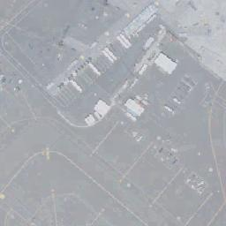
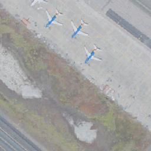
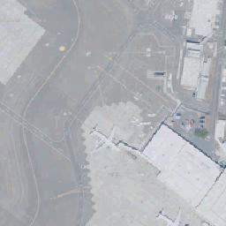
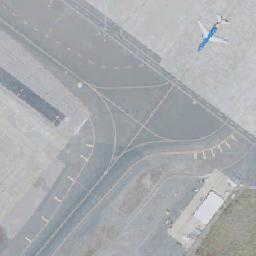
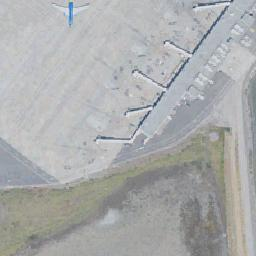

YAAT-2742 · When does the Airport Editor show fallback imagery, and does it say why imagery is missing?
The Airport Editor draws the vNAS tower-cab satellite photo under the airport's map when vNAS has one, and falls back to USGS NAIPPlus tiles when it has none. A cold vNAS photo is a download of about 100 MB that can take a minute or more; a cached one answers in about a second.
Each frame is a scaled-down Airport Editor canvas over the Oakland (KOAK) terminal ramp, zoom 17, with real USGS tiles (from the YAAT-2742 imagery-source mock). The vNAS photo is stood in for by the same tiles, warm-toned. Amber taxiway lines, white labels and the bottom-left Select HUD use the editor's own colours and font. The dashed vNAS photo / USGS tiles pills are mock annotations, not part of the UI.
Question 1 · While a cold vNAS photo downloads, what does the editor show?
t = 0 smap just opened
t = 3 svNAS still downloading
t = 60 scold vNAS download finishes
AWait for vNAS
No imagery until vNAS answers. Tiles appear only when vNAS has no photo for the airport.
Select
0 s · dark, vNAS download started
Select
3 s · still dark, vNAS still downloading





vNAS photo
Select
60 s · vNAS photo appears
BTiles after 3 s
Dark for the first 3 s; if vNAS has not answered by then, USGS tiles fill in until the photo arrives.
Select
0 s · dark, vNAS download started
USGS tiles
Map services and data available from U.S. Geological Survey, National Geospatial Program.
Select
3 s · USGS tiles fill in, vNAS still downloading
vNAS photo
Select
60 s · vNAS photo replaces the tiles
CTiles at once
USGS tiles from the first frame, swapped for the vNAS photo when it arrives.
USGS tiles
Map services and data available from U.S. Geological Survey, National Geospatial Program.
Select
0 s · USGS tiles at once, vNAS download started
USGS tiles
Map services and data available from U.S. Geological Survey, National Geospatial Program.
Select
3 s · USGS tiles, vNAS still downloading
vNAS photo
Select
60 s · vNAS photo replaces the tiles
Common case: the vNAS photo is cached and answers at 1 s · the same three options, frames at 0 s and 1 s
Cached photo
What an instructor sees on most opens, after the first download.
Select
0 s dark
vNAS photo
Select
1 s vNAS photo
A · Dark for 1 s, then the photo.
Select
0 s dark
vNAS photo
Select
1 s vNAS photo
B · Same as A: the photo beats the 3 s mark, so tiles never show.
USGS tiles
Map services and data available from U.S. Geological Survey, National Geospatial Program.
Select
0 s USGS tiles
vNAS photo
Select
1 s vNAS photo
C · Tiles for 1 s, then the photo: one visible swap on every open.
Question 2 · When tiles are missing, does the editor say so?
The tile layer offline, with nothing cached for three of its cells: those cells stay the editor's dark background.
ASilent
Empty cells stay dark; no text.
USGS tiles
Map services and data available from U.S. Geological Survey, National Geospatial Program.
Select
Offline · three cells never loaded, nothing explains the gaps
Zoomed far out, or at an airport outside the US, Silent shows a plain dark map with no text either.
BNotice
The same, plus one line in the bottom-left HUD, above the mode.
USGS tiles
Map services and data available from U.S. Geological Survey, National Geospatial Program.
Imagery offline: showing cached tiles only
Select
Offline · the gaps explained in the HUD
Zoom in to see imagery
Select
Zoomed far out · past the tiles’ coarsest zoom
No imagery outside the US
Select
Outside the US · no vNAS photo, outside USGS coverage